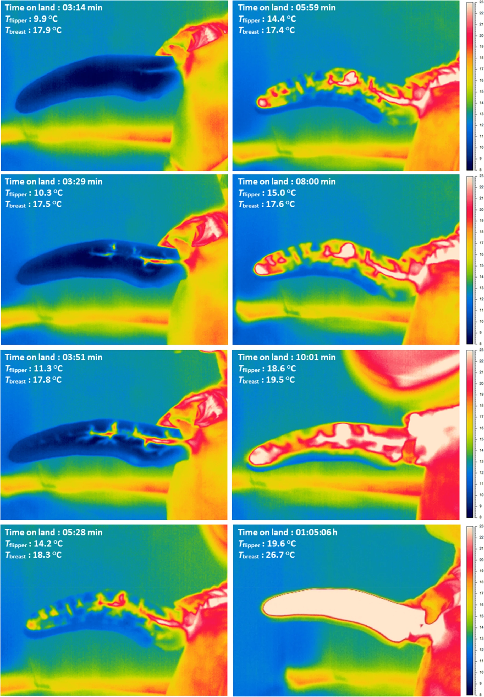
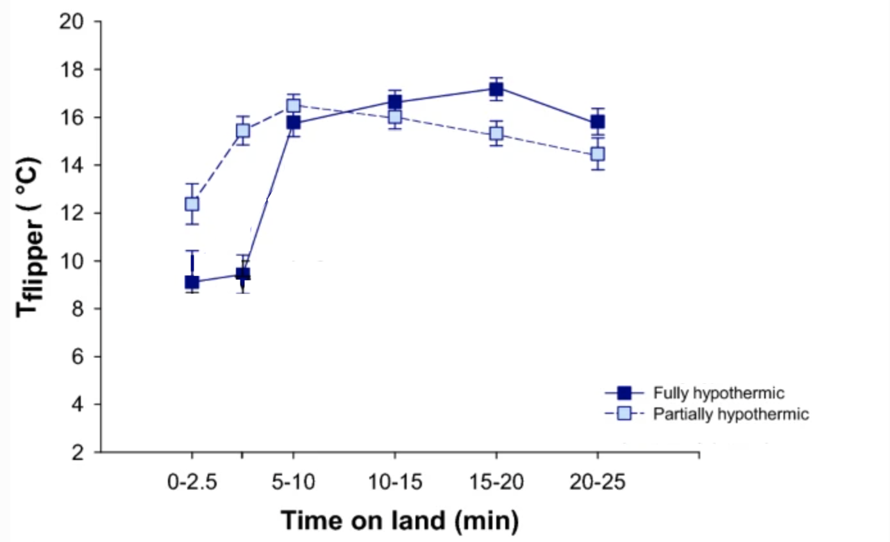
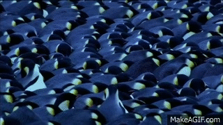
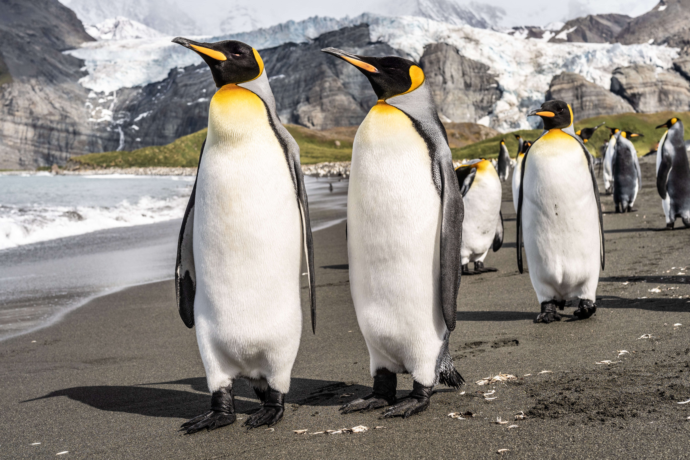

The Experiment
Researchers wanted to study how penguins warmed back up after long hunting trips in the sea. They decided to use thermal imaging cameras to study these processes. Due to a penguin's thick coat, the thermal camera cannot identify a penguin's core temperature, only its surface temperature. However, researchers could study how penguins thermoregulate using their flippers as thermal windows.
Researchers were particularly interested in these questions: Do penguins which are partially hypothermic warm up differently than penguins that are fully hypothermic? Do partially and fully hypothermic penguins stop vasoconstriction at different times when warming up?
Q6: What is your hypothesis?
The Results

Thermal images of a fully hypothermic king penguin flipper and chest (representing its core) as it rewarms after its return from the sea. At the upper left, you can see the time since it left the sea, the average flipper temperature, and the average chest temperature.
Q7: How do the temperatures of the flipper and chest differ at the beginning?
Q8: What is the last part of the penguin's body to warm? Why do you think this is?
\
Mean (with standard error bars) temperature of king penguin flippers, as a function of time on land. Fully hypothermic birds are represented by filled squares and solid lines; partially hypothermic birds are represented by light squares and dashed lines.
(Note: Edited from original by removal of wild-colony and year-one lines.)
Q9: What differences do you notice between the fully and partially hypothermic populations?
The researchers found a 5-minute delay to flipper warming in fully hypothermic penguins. There is no delay to flipper warming in partially hypothermic penguins. Why might that be? One possibility is that core temperature warming took precedence over flipper warming. Researchers think that the hypothermic penguins continued to vasoconstrict their flippers to focus on raising their core (chest) temperature during the first 5 minutes represented in the graph. Then, once their core temperature was back to normal, they ended vasoconstriction to allow their flippers to begin warming.
Q10: Consider why king penguins would have adapted to warm up this way. What are the benefits of regaining a normal core temperature before regaining flipper temperature?
How Emperor penguins huddle to stay warm
Adapted from McCafferty D. J., Gilbert C., Thierry A.-M., Currie J., Le Maho Y. and Ancel A. 2013

Researchers found that most of a penguin's body that is covered by thick feathers was, on average, 4 to 6 degrees Celsius colder than the air temperature. This is due to radiative cooling, which is when a warm object releases heat to the cold surrounding air.
One interesting example of radiative cooling, or night sky cooling, is the centuries-old practice of making ice in the desert. Peoples of North Africa, India, and Iran would pour shallow pools of water to leave out overnight. Even though the air temperature never went below freezing, the water still froze overnight due to night sky cooling!
Overnight, the penguins' feathers release heat to the cold sky through radiative cooling, leaving the outside of their feathers colder than the air temperature.
Q1: If the outside of their feathers are so cold, how do penguins stay warm enough? Why might losing more heat from cold feather coats ultimately allow penguins to retain more heat overall?
Luckily for the emperor penguins, their thick coats of feathers help them retain a higher internal temperature than the surface of their feather coats. You can see this with a thermal image: the penguin's eyes, feet, and flippers are closer to their internal temperature than their body. The amount of heat penguins lose to the air (via thermal convection) is determined by the temperature difference between the penguins' surface and the air. Heat flows from high to low temperatures, so the penguins' cold feather coats can allow them to gain a small amount of heat from the cold air.

Thermal image of two emperor penguins. The warmest spot in the image is the eyes, which are the most exposed part of their bodies.
Penguins are also facing the cold, strong polar winds.
Q2: Imagine you're on a windy beach with a group of friends. What might you do to stay warmer?
Along with their thick feathers, emperor penguins use huddling to warm themselves up!
Q3: How would huddling help penguins stay warm?
By pressing together, they reduce how exposed they are to cold air, which reduces the amount of heat carried away via thermal convection. They also block themselves from wind, which can accelerate heat being carried away during convection. Some penguins are on the outside of the huddle, which means they take the brunt of the wind.

Thank you!
Are you a teacher, student, or independent learner who went through this educational resource on penguins? Let us know how we did using the "Get in touch" button at your top right. We would love to hear how to improve our resources!
